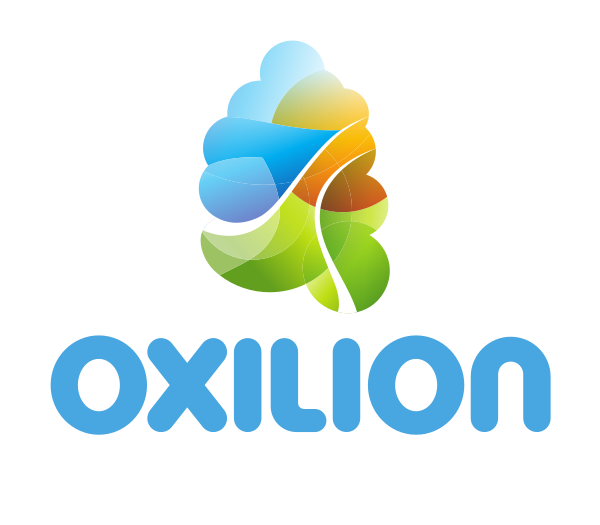

Dit is een website met een lange geschiedenis. Omdat er vooralsnog niemand is gevonden die duurzaam een alternatief wil ontwikkelen, hebben we de verouderde website vervangen door deze landingspagina.
Bijdragen
Openstreetmap wordt vaak de Wikipedia van kaarten genoemd. En niet zonder reden: iedereen kan de kaart bewerken. Een kaart is daarvoor bij uitstek geschikt: omdat er bij geografische informatie vooral feitelijke informatie wordt vastgelegd, kan daarover weinig discussie bestaan. Een weg ligt er of niet: een tussenweg is er niet. Gaat er toch wat mis, bijvoorbeeld met een eigen weg, stuur dan een bericht met foto. We halen de weg dan niet weg, maar markeren het als een prive toegangsweg. Dan moet er natuurlijk wel een bordje bijstaan.
Community
De Nederlandse OpenStreetMap Community is op diverse plekken actief: er is een Nederlandstalige categorie op het community-forum, een Nederlandstalig kanaal op de OSM World Discord, een Nederlandstalig Telegram-kanaal en een Nederlandse Matrix-space waarbij je zowel het Nederlandstalige discord- als telegram-kanaal kunt joinen. Daarnaast heeft OpenStreetMap ook zijn eigen Wiki met een Nederlandstalig deel.
Contact
Pers wordt geadviseerd contact op te nemen met pers@openstreetmap.nl. De webmaster is bereikbaar via webmaster@openstreetmap.nl. Voor donaties (in de vorm van complete data sets, technische- en/of financiële middelen) kun je een e-mail naar donaties@openstreetmap.nl sturen.
OpenStreetMap.nl wordt technisch ondersteund door:
